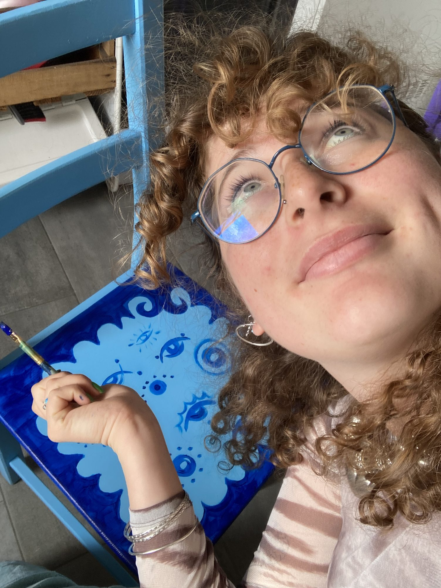
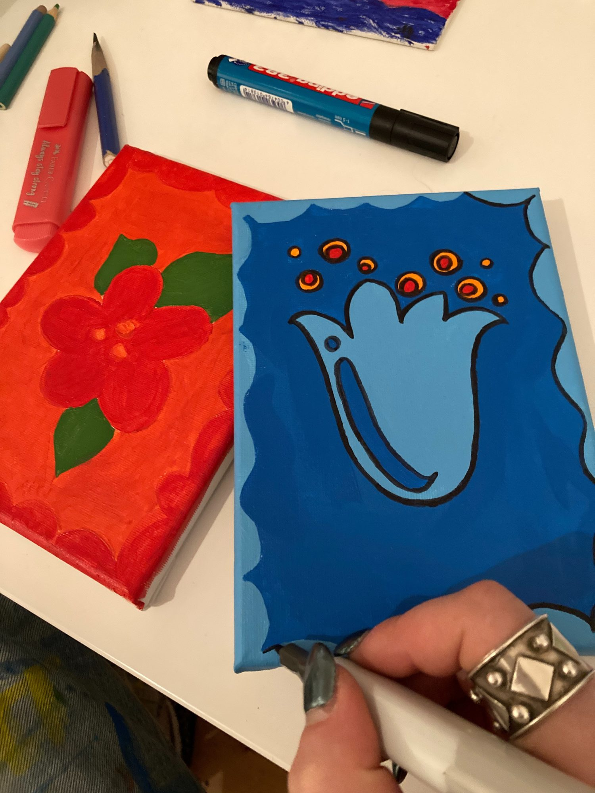

Opening line — one or two sentences that say who you are and what you make. Example shape: “Maria Papatheodorou is a [ ] artist based in [ ], working in jewellery, acrylic, watercolour and egg tempera.”
Artist statement
Four to six sentences. What you make, the materials you choose and why, the themes that keep returning, and what a viewer should look for. Written in the first person reads warmer for applications; third person is more usual for gallery submissions — pick one and keep it consistent across the page.
Working method
How you work: preparation of supports and grounds, pigments you grind or buy, metals and stones you use, how long a piece takes, whether you work from life, from photographs or from memory. Selection panels read this section closely.

Section one
Jewellery
Two to four sentences on the jewellery: metals and stones you work with, techniques (forging, casting, granulation, enamel, stone setting), whether pieces are unique or made in small series, and whether you take commissions.
Section two
Acrylics
Two to four sentences on the acrylic paintings: supports (canvas, board, paper), scale, whether they belong to named series, and the subjects or questions they deal with.
Section three
Works on Paper
Two to four sentences on the drawings: the papers you use, the pens, markers, coloured pencils or inks, whether these are studies for the paintings or finished works in their own right, and whether prints of them are available.
Section four
Aquarelle
Two to four sentences on the watercolours: papers and their weight, brushes, whether the work is painted on location or in the studio, wet-in-wet or layered glazes.
Section five · open
Natural Tempera
This section is held open for the work in natural tempera colours. The frames below are placeholders: add the photographs and the entries fill themselves in.
Two to five sentences on the tempera: the binder (egg yolk, casein, glue size), the earth and mineral pigments you grind, the panel and gesso preparation, and what this medium lets you do that acrylic and watercolour do not.
Pigments and materials used
Fill this in as the section grows — it is the kind of detail that a conservation department, a residency panel or a workshop client will look for.
| Pigment / material | Origin | Binder | Notes |
|---|---|---|---|
Section six
Applied Work
Two to four sentences on painted objects, furniture and printed textiles: what you take on, what a commission costs and how long it takes, and whether the printed pieces are made in editions. Employers and shops read this section as evidence you can deliver to a brief.
For applications
Curriculum
Everything below is left blank on purpose. These are the headings that galleries, residencies, schools and grant panels ask for; fill in what applies and delete the rest.
Education & training
Year — institution, city, degree or certificate. Include workshops and masterclasses in tempera, goldsmithing or restoration; they carry weight in craft applications.
Solo exhibitions
Year — title of the exhibition, venue, city.
Group exhibitions & fairs
Awards, grants & residencies
Collections & commissions
Public, corporate or private collections (private ones may be listed as “Private collection, city” without a name).
Teaching & workshops
Press & publications
Skills, techniques & languages
Bench and studio techniques, restoration or framing skills, software, languages with level.
Letter of motivation — working draft
Keep one general version here and adapt it per application. Three paragraphs is the usual length: what you are applying for and why this place in particular; what you would make there and with what materials; what you bring that is specific to you.
Documents
- Curriculum vitae (PDF)place the file at documents/cv.pdf and point the link here
- Portfolio (PDF)a printed-to-PDF version of this page works well
- Price list / work listtitle, year, medium, dimensions, price
Contact
- Studio
- Telephone
- Representation
- Studio visits
A short line on reproduction rights and commissions, e.g. “All images © Maria Papatheodorou. Reproduction only with written permission. Commissions considered on request.”